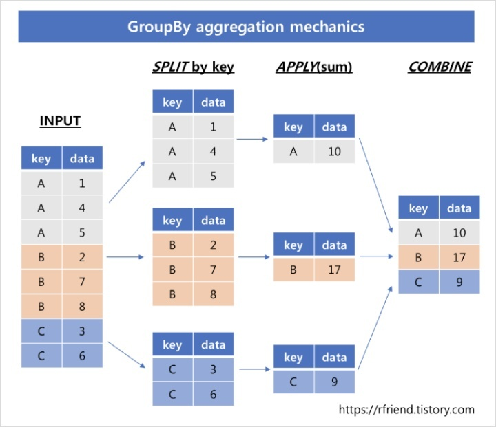

DataFrame
Dictionary 형으로 생성
List 형태로 데이터 프레임 생성
read.csv
# kt 데이터 파일을 활용
# 파일을 수정하고 저장 자체를 MS Office에서 하여서 encoding을 cp949로 해주어야 함
cust = pd.read_csv('./sc_cust_info_txn_v1.5.csv', encoding = "cp949")
cust| base_ym | dpro_tgt_perd_val | cust_ctg_type | cust_class | sex_type | age | efct_svc_count | dt_stop_yn | npay_yn | r3m_avg_bill_amt | r3m_A_avg_arpu_amt | r3m_B_avg_arpu_amt | r6m_A_avg_arpu_amt | r6m_B_avg_arpu_amt | termination_yn | |
|---|---|---|---|---|---|---|---|---|---|---|---|---|---|---|---|
| 0 | 202006 | 20200630 | 10001 | C | F | 28 | 0 | N | N | 2640.0000 | 792.000000 | 1584.0000 | 0.0 | 0.0000 | Y |
| 1 | 202006 | 20200630 | 10001 | _ | _ | _ | 1 | N | N | 300.0000 | 90.000000 | 180.0000 | 0.0 | 0.0000 | Y |
| 2 | 202006 | 20200630 | 10001 | E | F | 24 | 1 | N | N | 16840.0000 | 2526.000000 | 6983.0000 | 0.0 | 6981.0000 | N |
| 3 | 202006 | 20200630 | 10001 | F | F | 32 | 1 | N | N | 15544.7334 | 2331.710010 | 6750.4666 | 0.0 | 6508.8000 | N |
| 4 | 202006 | 20200630 | 10001 | D | M | 18 | 1 | N | N | 4700.0000 | 0.000000 | 4502.0000 | 0.0 | 4507.7000 | N |
| ... | ... | ... | ... | ... | ... | ... | ... | ... | ... | ... | ... | ... | ... | ... | ... |
| 9925 | 202006 | 20200630 | 10001 | C | F | 15 | 1 | N | Y | 1296.0999 | 194.414985 | 643.1001 | 0.0 | 852.5499 | N |
| 9926 | 202006 | 20200630 | 10001 | G | M | 12 | 1 | N | N | 13799.6666 | 2069.949990 | 10605.9266 | 0.0 | 10603.9266 | N |
| 9927 | 202006 | 20200630 | 10005 | C | _ | _ | 1 | N | N | 1396.2000 | 1206.000000 | 0.0000 | 1212.0 | 0.0000 | N |
| 9928 | 202006 | 20200630 | 10001 | C | F | 40 | 0 | N | N | 3140.0000 | 942.000000 | 1884.0000 | 0.0 | 0.0000 | Y |
| 9929 | 202006 | 20200630 | 10001 | C | F | 59 | 1 | N | N | 2436.9000 | 365.535000 | 1839.9000 | 0.0 | 1919.7999 | N |
9930 rows × 15 columns
- DataFrame 데이터 살펴보기 >DataFrame의 구조 (인덱스와 컬럼)
- 인덱스(Index) : 행의 레이블에 대한 정보를 보유하고 있음
- 컬럼(Columns) : 열의 레이블에 대한 정보를 보유하고 있음
- 인덱스와 컬럼 자체는 중복값일 수 없음
| base_ym | dpro_tgt_perd_val | cust_ctg_type | cust_class | sex_type | age | efct_svc_count | dt_stop_yn | npay_yn | r3m_avg_bill_amt | r3m_A_avg_arpu_amt | r3m_B_avg_arpu_amt | r6m_A_avg_arpu_amt | r6m_B_avg_arpu_amt | termination_yn | |
|---|---|---|---|---|---|---|---|---|---|---|---|---|---|---|---|
| 0 | 202006 | 20200630 | 10001 | C | F | 28 | 0 | N | N | 2640.0000 | 792.000000 | 1584.0000 | 0.0 | 0.0000 | Y |
| 1 | 202006 | 20200630 | 10001 | _ | _ | _ | 1 | N | N | 300.0000 | 90.000000 | 180.0000 | 0.0 | 0.0000 | Y |
| 2 | 202006 | 20200630 | 10001 | E | F | 24 | 1 | N | N | 16840.0000 | 2526.000000 | 6983.0000 | 0.0 | 6981.0000 | N |
| 3 | 202006 | 20200630 | 10001 | F | F | 32 | 1 | N | N | 15544.7334 | 2331.710010 | 6750.4666 | 0.0 | 6508.8000 | N |
| 4 | 202006 | 20200630 | 10001 | D | M | 18 | 1 | N | N | 4700.0000 | 0.000000 | 4502.0000 | 0.0 | 4507.7000 | N |
| ... | ... | ... | ... | ... | ... | ... | ... | ... | ... | ... | ... | ... | ... | ... | ... |
| 9925 | 202006 | 20200630 | 10001 | C | F | 15 | 1 | N | Y | 1296.0999 | 194.414985 | 643.1001 | 0.0 | 852.5499 | N |
| 9926 | 202006 | 20200630 | 10001 | G | M | 12 | 1 | N | N | 13799.6666 | 2069.949990 | 10605.9266 | 0.0 | 10603.9266 | N |
| 9927 | 202006 | 20200630 | 10005 | C | _ | _ | 1 | N | N | 1396.2000 | 1206.000000 | 0.0000 | 1212.0 | 0.0000 | N |
| 9928 | 202006 | 20200630 | 10001 | C | F | 40 | 0 | N | N | 3140.0000 | 942.000000 | 1884.0000 | 0.0 | 0.0000 | Y |
| 9929 | 202006 | 20200630 | 10001 | C | F | 59 | 1 | N | N | 2436.9000 | 365.535000 | 1839.9000 | 0.0 | 1919.7999 | N |
9930 rows × 15 columns
데이터 살펴보기
| base_ym | dpro_tgt_perd_val | cust_ctg_type | cust_class | sex_type | age | efct_svc_count | dt_stop_yn | npay_yn | r3m_avg_bill_amt | r3m_A_avg_arpu_amt | r3m_B_avg_arpu_amt | r6m_A_avg_arpu_amt | r6m_B_avg_arpu_amt | termination_yn | |
|---|---|---|---|---|---|---|---|---|---|---|---|---|---|---|---|
| 0 | 202006 | 20200630 | 10001 | C | F | 28 | 0 | N | N | 2640.0 | 792.0 | 1584.0 | 0.0 | 0.0 | Y |
| 1 | 202006 | 20200630 | 10001 | _ | _ | _ | 1 | N | N | 300.0 | 90.0 | 180.0 | 0.0 | 0.0 | Y |
| 2 | 202006 | 20200630 | 10001 | E | F | 24 | 1 | N | N | 16840.0 | 2526.0 | 6983.0 | 0.0 | 6981.0 | N |
| base_ym | dpro_tgt_perd_val | cust_ctg_type | cust_class | sex_type | age | efct_svc_count | dt_stop_yn | npay_yn | r3m_avg_bill_amt | r3m_A_avg_arpu_amt | r3m_B_avg_arpu_amt | r6m_A_avg_arpu_amt | r6m_B_avg_arpu_amt | termination_yn | |
|---|---|---|---|---|---|---|---|---|---|---|---|---|---|---|---|
| 9920 | 202006 | 20200630 | 10001 | D | M | 46 | 0 | N | N | 6920.0000 | 2076.000000 | 4152.0000 | 0.0000 | 0.0000 | Y |
| 9921 | 202006 | 20200630 | 10001 | D | M | 54 | 1 | N | Y | 5198.0666 | 0.000000 | 4760.8666 | 0.0000 | 4749.3000 | N |
| 9922 | 202006 | 20200630 | 10001 | E | M | 65 | 4 | N | N | 9115.1334 | 3209.600000 | 0.0000 | 3523.7334 | 0.0000 | N |
| 9923 | 202006 | 20200630 | 10001 | C | M | 76 | 1 | N | N | 1860.0000 | 1716.000000 | 0.0000 | 1722.0000 | 0.0000 | N |
| 9924 | 202006 | 20200630 | 10005 | C | _ | _ | 0 | N | N | 17038.2000 | 5111.460000 | 10222.9200 | 0.0000 | 0.0000 | Y |
| 9925 | 202006 | 20200630 | 10001 | C | F | 15 | 1 | N | Y | 1296.0999 | 194.414985 | 643.1001 | 0.0000 | 852.5499 | N |
| 9926 | 202006 | 20200630 | 10001 | G | M | 12 | 1 | N | N | 13799.6666 | 2069.949990 | 10605.9266 | 0.0000 | 10603.9266 | N |
| 9927 | 202006 | 20200630 | 10005 | C | _ | _ | 1 | N | N | 1396.2000 | 1206.000000 | 0.0000 | 1212.0000 | 0.0000 | N |
| 9928 | 202006 | 20200630 | 10001 | C | F | 40 | 0 | N | N | 3140.0000 | 942.000000 | 1884.0000 | 0.0000 | 0.0000 | Y |
| 9929 | 202006 | 20200630 | 10001 | C | F | 59 | 1 | N | N | 2436.9000 | 365.535000 | 1839.9000 | 0.0000 | 1919.7999 | N |
- DataFrame 기본 함수로 살펴보기 - shape : 속성 반환값은 튜플로 존재하며 row과 col의 개수를 튜플로 반환함(row,col순) - columns : 해당 DataFrame을 구성하는 컬럼명을 확인할 수 있음 - info : 데이터 타입, 각 아이템의 개수 등 출력 - describe : 데이터 컬럼별 요약 통계량을 나타냄, 숫자형 데이터의 통계치 계산 (count:데이터의 갯수 / mean:평균값 / std:표준편차 / min:최소값 / 4분위 수 / max:최대값) - dtypes : 데이터 형태의 종류(Data Types)
Index(['base_ym', 'dpro_tgt_perd_val', 'cust_ctg_type', 'cust_class',
'sex_type', 'age', 'efct_svc_count', 'dt_stop_yn', 'npay_yn',
'r3m_avg_bill_amt', 'r3m_A_avg_arpu_amt', 'r3m_B_avg_arpu_amt',
'r6m_A_avg_arpu_amt', 'r6m_B_avg_arpu_amt', 'termination_yn'],
dtype='object')<class 'pandas.core.frame.DataFrame'>
RangeIndex: 9930 entries, 0 to 9929
Data columns (total 15 columns):
# Column Non-Null Count Dtype
--- ------ -------------- -----
0 base_ym 9930 non-null int64
1 dpro_tgt_perd_val 9930 non-null int64
2 cust_ctg_type 9930 non-null int64
3 cust_class 9930 non-null object
4 sex_type 9930 non-null object
5 age 9930 non-null object
6 efct_svc_count 9930 non-null int64
7 dt_stop_yn 9930 non-null object
8 npay_yn 9930 non-null object
9 r3m_avg_bill_amt 9930 non-null float64
10 r3m_A_avg_arpu_amt 9930 non-null float64
11 r3m_B_avg_arpu_amt 9930 non-null float64
12 r6m_A_avg_arpu_amt 9930 non-null float64
13 r6m_B_avg_arpu_amt 9930 non-null float64
14 termination_yn 9930 non-null object
dtypes: float64(5), int64(4), object(6)
memory usage: 1.1+ MB| base_ym | dpro_tgt_perd_val | cust_ctg_type | efct_svc_count | r3m_avg_bill_amt | r3m_A_avg_arpu_amt | r3m_B_avg_arpu_amt | r6m_A_avg_arpu_amt | r6m_B_avg_arpu_amt | |
|---|---|---|---|---|---|---|---|---|---|
| count | 9930.0 | 9930.0 | 9930.000000 | 9930.000000 | 9.930000e+03 | 9.930000e+03 | 9.930000e+03 | 9.930000e+03 | 9930.000000 |
| mean | 202006.0 | 20200630.0 | 10001.372810 | 1.520040 | 1.181774e+04 | 1.897536e+03 | 6.395259e+03 | 8.496206e+02 | 4624.897630 |
| std | 0.0 | 0.0 | 1.605016 | 15.404037 | 1.397822e+05 | 1.235342e+04 | 8.346138e+04 | 1.235124e+04 | 4561.049131 |
| min | 202006.0 | 20200630.0 | 10001.000000 | 0.000000 | 0.000000e+00 | 0.000000e+00 | 0.000000e+00 | 0.000000e+00 | 0.000000 |
| 25% | 202006.0 | 20200630.0 | 10001.000000 | 1.000000 | 3.624503e+03 | 3.240000e+02 | 1.260000e+03 | 0.000000e+00 | 0.000000 |
| 50% | 202006.0 | 20200630.0 | 10001.000000 | 1.000000 | 8.284467e+03 | 1.593307e+03 | 4.768617e+03 | 0.000000e+00 | 3959.316700 |
| 75% | 202006.0 | 20200630.0 | 10001.000000 | 1.000000 | 1.372000e+04 | 2.308360e+03 | 7.982000e+03 | 1.006125e+03 | 7741.006900 |
| max | 202006.0 | 20200630.0 | 10010.000000 | 905.000000 | 1.281568e+07 | 1.188998e+06 | 7.689409e+06 | 1.208498e+06 | 64947.092000 |
base_ym int64
dpro_tgt_perd_val int64
cust_ctg_type int64
cust_class object
sex_type object
age object
efct_svc_count int64
dt_stop_yn object
npay_yn object
r3m_avg_bill_amt float64
r3m_A_avg_arpu_amt float64
r3m_B_avg_arpu_amt float64
r6m_A_avg_arpu_amt float64
r6m_B_avg_arpu_amt float64
termination_yn object
dtype: objectread_csv 함수 파라미터 살펴보기
- 함수에 커서를 가져다 두고 shift+tab을 누르면 해당 함수의 parameter 볼 수 있음
- sep - 각 데이터 값을 구별하기 위한 구분자(separator) 설정
- index_col : index로 사용할 column 설정
- usecols : 실제로 dataframe에 로딩할 columns만 설정
- usecols은 index_col을 포함하여야 함
cust2 = pd.read_csv('./sc_cust_info_txn_v1.5.csv', index_col='cust_class', usecols=['cust_class', 'r3m_avg_bill_amt', 'r3m_B_avg_arpu_amt', 'r6m_B_avg_arpu_amt'])
cust2| r3m_avg_bill_amt | r3m_B_avg_arpu_amt | r6m_B_avg_arpu_amt | |
|---|---|---|---|
| cust_class | |||
| C | 2640.0000 | 1584.0000 | 0.0000 |
| _ | 300.0000 | 180.0000 | 0.0000 |
| E | 16840.0000 | 6983.0000 | 6981.0000 |
| F | 15544.7334 | 6750.4666 | 6508.8000 |
| D | 4700.0000 | 4502.0000 | 4507.7000 |
| ... | ... | ... | ... |
| C | 1296.0999 | 643.1001 | 852.5499 |
| G | 13799.6666 | 10605.9266 | 10603.9266 |
| C | 1396.2000 | 0.0000 | 0.0000 |
| C | 3140.0000 | 1884.0000 | 0.0000 |
| C | 2436.9000 | 1839.9000 | 1919.7999 |
9930 rows × 3 columns
indexing
column 선택하기
- 기본적으로 [ ]는 column을 추출 : 특정한 col을기준으로 모델링을 하고자 하는 경우
- 컬럼 인덱스일 경우 인덱스의 리스트 사용 가능
- 리스트를 전달할 경우 결과는 Dataframe
- 하나의 컬럼명을 전달할 경우 결과는 Series
하나의 컬럼 선택하기
- Series 형태로 가지고 올 수도, DataFrame형태로 가지고 올 수 있음
0 C
1 _
2 E
3 F
4 D
..
9925 C
9926 G
9927 C
9928 C
9929 C
Name: cust_class, Length: 9930, dtype: object0 C
1 _
2 E
3 F
4 D
..
9925 C
9926 G
9927 C
9928 C
9929 C
Name: cust_class, Length: 9930, dtype: object복수의 컬럼 선택하기
# 'cust_class' , 'age' 'r3m_avg_bill_amt'등 3개의 col 선택하기
cust[['cust_class', 'age', 'r3m_avg_bill_amt']]| cust_class | age | r3m_avg_bill_amt | |
|---|---|---|---|
| 0 | C | 28 | 2640.0000 |
| 1 | _ | _ | 300.0000 |
| 2 | E | 24 | 16840.0000 |
| 3 | F | 32 | 15544.7334 |
| 4 | D | 18 | 4700.0000 |
| ... | ... | ... | ... |
| 9925 | C | 15 | 1296.0999 |
| 9926 | G | 12 | 13799.6666 |
| 9927 | C | _ | 1396.2000 |
| 9928 | C | 40 | 3140.0000 |
| 9929 | C | 59 | 2436.9000 |
9930 rows × 3 columns
DataFrame slicing
- 특정 행 범위를 가지고 오고 싶다면 [ ]를 사용
- DataFrame의 경우 기본적으로 [ ] 연산자가 column 선택에 사용되지만 slicing은 row 레벨로 지원
| base_ym | dpro_tgt_perd_val | cust_ctg_type | cust_class | sex_type | age | efct_svc_count | dt_stop_yn | npay_yn | r3m_avg_bill_amt | r3m_A_avg_arpu_amt | r3m_B_avg_arpu_amt | r6m_A_avg_arpu_amt | r6m_B_avg_arpu_amt | termination_yn | |
|---|---|---|---|---|---|---|---|---|---|---|---|---|---|---|---|
| 7 | 202006 | 20200630 | 10001 | D | F | 65 | 1 | N | N | 4953.9334 | 987.0000 | 2700.3999 | 0.0000 | 2689.1 | N |
| 8 | 202006 | 20200630 | 10001 | D | M | 60 | 1 | N | N | 5503.0000 | 2093.0001 | 0.0000 | 1981.8999 | 0.0 | N |
| 9 | 202006 | 20200630 | 10001 | C | F | 67 | 1 | N | N | 1349.7000 | 1227.0000 | 0.0000 | 985.5000 | 0.0 | N |
row 선택하기
- DataFrame에서는 기본적으로 [ ]을 사용하여 column을 선택 > row 선택(두가지 방법이 존재) > - loc : Dataframe에 존재하는 인덱스를 그대로 사용 (인덱스 기준으로 행 데이터 읽기) > - iloc : Datafrmae에 존재하는 인덱스 상관없이 0 based index로 사용 (행 번호 기준으로 행 데이터 읽기) > - 이 두 함수는 ,를 사용하여 column 선택도 가능
<class 'pandas.core.frame.DataFrame'>
RangeIndex: 9930 entries, 0 to 9929
Data columns (total 15 columns):
# Column Non-Null Count Dtype
--- ------ -------------- -----
0 base_ym 9930 non-null int64
1 dpro_tgt_perd_val 9930 non-null int64
2 cust_ctg_type 9930 non-null int64
3 cust_class 9930 non-null object
4 sex_type 9930 non-null object
5 age 9930 non-null object
6 efct_svc_count 9930 non-null int64
7 dt_stop_yn 9930 non-null object
8 npay_yn 9930 non-null object
9 r3m_avg_bill_amt 9930 non-null float64
10 r3m_A_avg_arpu_amt 9930 non-null float64
11 r3m_B_avg_arpu_amt 9930 non-null float64
12 r6m_A_avg_arpu_amt 9930 non-null float64
13 r6m_B_avg_arpu_amt 9930 non-null float64
14 termination_yn 9930 non-null object
dtypes: float64(5), int64(4), object(6)
memory usage: 1.1+ MBarray([10, 11, 12, 13, 14, 15, 16, 17, 18, 19])| base_ym | dpro_tgt_perd_val | cust_ctg_type | cust_class | sex_type | age | efct_svc_count | dt_stop_yn | npay_yn | r3m_avg_bill_amt | r3m_A_avg_arpu_amt | r3m_B_avg_arpu_amt | r6m_A_avg_arpu_amt | r6m_B_avg_arpu_amt | termination_yn | |
|---|---|---|---|---|---|---|---|---|---|---|---|---|---|---|---|
| 100 | 202006 | 20200630 | 10001 | C | F | 28 | 0 | N | N | 2640.0000 | 792.000000 | 1584.0000 | 0.0 | 0.0000 | Y |
| 101 | 202006 | 20200630 | 10001 | _ | _ | _ | 1 | N | N | 300.0000 | 90.000000 | 180.0000 | 0.0 | 0.0000 | Y |
| 102 | 202006 | 20200630 | 10001 | E | F | 24 | 1 | N | N | 16840.0000 | 2526.000000 | 6983.0000 | 0.0 | 6981.0000 | N |
| 103 | 202006 | 20200630 | 10001 | F | F | 32 | 1 | N | N | 15544.7334 | 2331.710010 | 6750.4666 | 0.0 | 6508.8000 | N |
| 104 | 202006 | 20200630 | 10001 | D | M | 18 | 1 | N | N | 4700.0000 | 0.000000 | 4502.0000 | 0.0 | 4507.7000 | N |
| ... | ... | ... | ... | ... | ... | ... | ... | ... | ... | ... | ... | ... | ... | ... | ... |
| 10025 | 202006 | 20200630 | 10001 | C | F | 15 | 1 | N | Y | 1296.0999 | 194.414985 | 643.1001 | 0.0 | 852.5499 | N |
| 10026 | 202006 | 20200630 | 10001 | G | M | 12 | 1 | N | N | 13799.6666 | 2069.949990 | 10605.9266 | 0.0 | 10603.9266 | N |
| 10027 | 202006 | 20200630 | 10005 | C | _ | _ | 1 | N | N | 1396.2000 | 1206.000000 | 0.0000 | 1212.0 | 0.0000 | N |
| 10028 | 202006 | 20200630 | 10001 | C | F | 40 | 0 | N | N | 3140.0000 | 942.000000 | 1884.0000 | 0.0 | 0.0000 | Y |
| 10029 | 202006 | 20200630 | 10001 | C | F | 59 | 1 | N | N | 2436.9000 | 365.535000 | 1839.9000 | 0.0 | 1919.7999 | N |
9930 rows × 15 columns
| base_ym | dpro_tgt_perd_val | cust_ctg_type | cust_class | sex_type | age | efct_svc_count | dt_stop_yn | npay_yn | r3m_avg_bill_amt | r3m_A_avg_arpu_amt | r3m_B_avg_arpu_amt | r6m_A_avg_arpu_amt | r6m_B_avg_arpu_amt | termination_yn | |
|---|---|---|---|---|---|---|---|---|---|---|---|---|---|---|---|
| 10025 | 202006 | 20200630 | 10001 | C | F | 15 | 1 | N | Y | 1296.0999 | 194.414985 | 643.1001 | 0.0 | 852.5499 | N |
| 10026 | 202006 | 20200630 | 10001 | G | M | 12 | 1 | N | N | 13799.6666 | 2069.949990 | 10605.9266 | 0.0 | 10603.9266 | N |
| 10027 | 202006 | 20200630 | 10005 | C | _ | _ | 1 | N | N | 1396.2000 | 1206.000000 | 0.0000 | 1212.0 | 0.0000 | N |
| 10028 | 202006 | 20200630 | 10001 | C | F | 40 | 0 | N | N | 3140.0000 | 942.000000 | 1884.0000 | 0.0 | 0.0000 | Y |
| 10029 | 202006 | 20200630 | 10001 | C | F | 59 | 1 | N | N | 2436.9000 | 365.535000 | 1839.9000 | 0.0 | 1919.7999 | N |
| base_ym | dpro_tgt_perd_val | cust_ctg_type | cust_class | sex_type | age | efct_svc_count | dt_stop_yn | npay_yn | r3m_avg_bill_amt | r3m_A_avg_arpu_amt | r3m_B_avg_arpu_amt | r6m_A_avg_arpu_amt | r6m_B_avg_arpu_amt | termination_yn | |
|---|---|---|---|---|---|---|---|---|---|---|---|---|---|---|---|
| 289 | 202006 | 20200630 | 10001 | G | M | 28 | 1 | N | N | 14340.91989 | 331.5999 | 12705.6 | 0.0 | 12703.6 | N |
| base_ym | dpro_tgt_perd_val | cust_ctg_type | cust_class | sex_type | age | efct_svc_count | dt_stop_yn | npay_yn | r3m_avg_bill_amt | r3m_A_avg_arpu_amt | r3m_B_avg_arpu_amt | r6m_A_avg_arpu_amt | r6m_B_avg_arpu_amt | termination_yn | |
|---|---|---|---|---|---|---|---|---|---|---|---|---|---|---|---|
| 102 | 202006 | 20200630 | 10001 | E | F | 24 | 1 | N | N | 16840.00000 | 2526.0000 | 6983.0 | 0.0 | 6981.00 | N |
| 202 | 202006 | 20200630 | 10010 | _ | _ | _ | 1 | N | N | 22362.93330 | 2082.0000 | 9410.0 | 0.0 | 9408.00 | N |
| 302 | 202006 | 20200630 | 10001 | G | M | 52 | 1 | N | Y | 17769.50989 | 1506.9999 | 14647.1 | 0.0 | 14744.95 | N |
| base_ym | dpro_tgt_perd_val | cust_ctg_type | cust_class | sex_type | age | efct_svc_count | dt_stop_yn | npay_yn | r3m_avg_bill_amt | r3m_A_avg_arpu_amt | r3m_B_avg_arpu_amt | r6m_A_avg_arpu_amt | r6m_B_avg_arpu_amt | termination_yn | |
|---|---|---|---|---|---|---|---|---|---|---|---|---|---|---|---|
| 102 | 202006 | 20200630 | 10001 | E | F | 24 | 1 | N | N | 16840.00000 | 2526.0000 | 6983.0 | 0.0 | 6981.00 | N |
| 202 | 202006 | 20200630 | 10010 | _ | _ | _ | 1 | N | N | 22362.93330 | 2082.0000 | 9410.0 | 0.0 | 9408.00 | N |
| 302 | 202006 | 20200630 | 10001 | G | M | 52 | 1 | N | Y | 17769.50989 | 1506.9999 | 14647.1 | 0.0 | 14744.95 | N |
- row, column 동시에 선택하기 > loc, iloc 속성을 이용할 때, 콤마를 이용하여 row와 col 다 명시 가능
# 100, 200, 300 대상으로 cust_class, sex_type, age, r3m_avg_bill_amt, r3m_A_avg_arpu_amt col 가지고 오기(loc사용)
cust.loc[[100, 200, 300], ['cust_class', 'sex_type', 'age', 'r3m_avg_bill_amt', 'r3m_A_avg_arpu_amt']] # row, col| cust_class | sex_type | age | r3m_avg_bill_amt | r3m_A_avg_arpu_amt | |
|---|---|---|---|---|---|
| 100 | C | F | 28 | 2640.00000 | 792.0000 |
| 200 | E | M | 61 | 9526.77000 | 1878.9000 |
| 300 | D | M | 84 | 11622.37472 | 2716.7952 |
# 같은 형태로 iloc사용하기 (index를 level로 가지고 오기)
# 100, 200, 300 대상으로 cust_class, sex_type, age, r3m_avg_bill_amt, r3m_A_avg_arpu_amt col 가지고 오기(iloc사용)
cust.iloc[[0, 100, 200], [3, 4, 5, 9, 10]]| cust_class | sex_type | age | r3m_avg_bill_amt | r3m_A_avg_arpu_amt | |
|---|---|---|---|---|---|
| 100 | C | F | 28 | 2640.00000 | 792.0000 |
| 200 | E | M | 61 | 9526.77000 | 1878.9000 |
| 300 | D | M | 84 | 11622.37472 | 2716.7952 |
- 100, 200, 300 대상으로 cust_class, sex_type, age, r3m_avg_bill_amt, r3m_A_avg_arpu_amt col 가지고 오기(loc사용 : 에러발생 함)
boolean selection 연산으로 row 선택하기
해당 조건에 맞는 row만 선택
조건을 명시하고 조건을 명시한 형태로 inedxing 하여 가지고 옴
ex: 남자이면서 3개월 평균 청구 금액이 50000 이상이면서 100000 미만인 사람만 가지고오기
- 조건을 전부다 [ ]안에 넣어 주면 됨
extract = cust[(cust['sex_type']=='M') & (cust['r3m_avg_bill_amt']>=50000) & (cust['r3m_avg_bill_amt']< 100000)]
extract.head()| base_ym | dpro_tgt_perd_val | cust_ctg_type | cust_class | sex_type | age | efct_svc_count | dt_stop_yn | npay_yn | r3m_avg_bill_amt | r3m_A_avg_arpu_amt | r3m_B_avg_arpu_amt | r6m_A_avg_arpu_amt | r6m_B_avg_arpu_amt | termination_yn | |
|---|---|---|---|---|---|---|---|---|---|---|---|---|---|---|---|
| 472 | 202006 | 20200630 | 10001 | F | M | 28 | 1 | N | N | 65113.66670 | 1310.4000 | 20083.5033 | 0.0 | 19426.1983 | N |
| 1149 | 202006 | 20200630 | 10001 | D | M | 20 | 2 | N | N | 80335.67685 | 69136.1001 | 3896.3334 | 0.0 | 3727.6666 | N |
| 1464 | 202006 | 20200630 | 10001 | _ | M | 45 | 1 | N | Y | 54865.70000 | 2321.8666 | 8744.9382 | 0.0 | 8774.7162 | N |
| 1893 | 202006 | 20200630 | 10001 | G | M | 48 | 1 | N | N | 64804.34037 | 47599.4501 | 11313.5866 | 0.0 | 11351.4984 | N |
| 2127 | 202006 | 20200630 | 10001 | G | M | 47 | 1 | N | Y | 55368.98422 | 37432.2666 | 12903.1736 | 0.0 | 12901.1736 | N |
-조건문이 너무 길어지거나 복잡해지면…아래와 같은 방식으로 해도 무방함
# 조건문이 너무 길어지거나 복잡해지면...아래와 같은 방식으로 해도 무방함
# 남자이면서
sex = cust['sex_type']=='M'
# 3개월 평균 청구 금액이 50000 이상이면서 100000 미만
bill = (cust['r3m_avg_bill_amt']>=50000) & (cust['r3m_avg_bill_amt']< 100000)
cust[sex & bill].head()| base_ym | dpro_tgt_perd_val | cust_ctg_type | cust_class | sex_type | age | efct_svc_count | dt_stop_yn | npay_yn | r3m_avg_bill_amt | r3m_A_avg_arpu_amt | r3m_B_avg_arpu_amt | r6m_A_avg_arpu_amt | r6m_B_avg_arpu_amt | termination_yn | |
|---|---|---|---|---|---|---|---|---|---|---|---|---|---|---|---|
| 472 | 202006 | 20200630 | 10001 | F | M | 28 | 1 | N | N | 65113.66670 | 1310.4000 | 20083.5033 | 0.0 | 19426.1983 | N |
| 1149 | 202006 | 20200630 | 10001 | D | M | 20 | 2 | N | N | 80335.67685 | 69136.1001 | 3896.3334 | 0.0 | 3727.6666 | N |
| 1464 | 202006 | 20200630 | 10001 | _ | M | 45 | 1 | N | Y | 54865.70000 | 2321.8666 | 8744.9382 | 0.0 | 8774.7162 | N |
| 1893 | 202006 | 20200630 | 10001 | G | M | 48 | 1 | N | N | 64804.34037 | 47599.4501 | 11313.5866 | 0.0 | 11351.4984 | N |
| 2127 | 202006 | 20200630 | 10001 | G | M | 47 | 1 | N | Y | 55368.98422 | 37432.2666 | 12903.1736 | 0.0 | 12901.1736 | N |
Summary
- 기본적인 대괄호는 col을 가지고 오는 경우 사용, 하지만 slicing은 row를 가지고 온다.
- row를 가지고 오는 경우는 loc과 iloc을 사용하는데, loc과 iloc은 컬럼과 row를 동시에 가지고 올 수 있다.
데이터 추가하기
새 column 추가
- 데이터 전처리 과정에서 빈번하게 발생하는 것
- insert 함수 사용하여 원하는 위치에 추가하기
- r3m_avg_bill_amt 두배로 새로운 col만들기
| r3m_avg_bill_amt | r3m_avg_bill_amt2 | |
|---|---|---|
| 100 | 2640.0000 | 5280.0000 |
| 101 | 300.0000 | 600.0000 |
| 102 | 16840.0000 | 33680.0000 |
| 103 | 15544.7334 | 31089.4668 |
| 104 | 4700.0000 | 9400.0000 |
- 기존에 col을 연산하여 새로운 데이터 생성
cust['r3m_avg_bill_amt3'] = cust['r3m_avg_bill_amt2'] + cust['r3m_avg_bill_amt']
cust[['r3m_avg_bill_amt','r3m_avg_bill_amt2','r3m_avg_bill_amt3']].head()| r3m_avg_bill_amt | r3m_avg_bill_amt2 | r3m_avg_bill_amt3 | |
|---|---|---|---|
| 100 | 2640.0000 | 5280.0000 | 7920.0000 |
| 101 | 300.0000 | 600.0000 | 900.0000 |
| 102 | 16840.0000 | 33680.0000 | 50520.0000 |
| 103 | 15544.7334 | 31089.4668 | 46634.2002 |
| 104 | 4700.0000 | 9400.0000 | 14100.0000 |
- 새로은 col들은 항상맨뒤에 존재 원하는 위치에 col을 추가하고자 하는 경우
- 위치를 조절 하고 싶다면(insert함수 사용)
#cust.insert(10, 'r3m_avg_bill_amt10', cust['r3m_avg_bill_amt'] *10) # 0부터 시작하여 10번째 col에 insert
cust[['r3m_avg_bill_amt','r3m_avg_bill_amt10']].head()| r3m_avg_bill_amt | r3m_avg_bill_amt10 | |
|---|---|---|
| 100 | 2640.0000 | 26400.000 |
| 101 | 300.0000 | 3000.000 |
| 102 | 16840.0000 | 168400.000 |
| 103 | 15544.7334 | 155447.334 |
| 104 | 4700.0000 | 47000.000 |
column 삭제
- drop 함수 사용하여 삭제
- axis는 삭제를 가로(행)기준으로 할 것인지, 세로(열)기준으로 할 것인지 명시하는 ’drop()’메소드의 파라미터임
- 리스트를 사용하면 멀티플 col 삭제 가능
# axis : dataframe은 차원이 존재 함으로 항상 0과 1이 존재
# (0은 행레벨, 1을 열 레벨)
cust.drop('r3m_avg_bill_amt10', axis=1)| base_ym | dpro_tgt_perd_val | cust_ctg_type | cust_class | sex_type | age | efct_svc_count | dt_stop_yn | npay_yn | r3m_avg_bill_amt | r3m_A_avg_arpu_amt | r3m_B_avg_arpu_amt | r6m_A_avg_arpu_amt | r6m_B_avg_arpu_amt | termination_yn | r3m_avg_bill_amt2 | r3m_avg_bill_amt3 | |
|---|---|---|---|---|---|---|---|---|---|---|---|---|---|---|---|---|---|
| 100 | 202006 | 20200630 | 10001 | C | F | 28 | 0 | N | N | 2640.0000 | 792.000000 | 1584.0000 | 0.0 | 0.0000 | Y | 5280.0000 | 7920.0000 |
| 101 | 202006 | 20200630 | 10001 | _ | _ | _ | 1 | N | N | 300.0000 | 90.000000 | 180.0000 | 0.0 | 0.0000 | Y | 600.0000 | 900.0000 |
| 102 | 202006 | 20200630 | 10001 | E | F | 24 | 1 | N | N | 16840.0000 | 2526.000000 | 6983.0000 | 0.0 | 6981.0000 | N | 33680.0000 | 50520.0000 |
| 103 | 202006 | 20200630 | 10001 | F | F | 32 | 1 | N | N | 15544.7334 | 2331.710010 | 6750.4666 | 0.0 | 6508.8000 | N | 31089.4668 | 46634.2002 |
| 104 | 202006 | 20200630 | 10001 | D | M | 18 | 1 | N | N | 4700.0000 | 0.000000 | 4502.0000 | 0.0 | 4507.7000 | N | 9400.0000 | 14100.0000 |
| ... | ... | ... | ... | ... | ... | ... | ... | ... | ... | ... | ... | ... | ... | ... | ... | ... | ... |
| 10025 | 202006 | 20200630 | 10001 | C | F | 15 | 1 | N | Y | 1296.0999 | 194.414985 | 643.1001 | 0.0 | 852.5499 | N | 2592.1998 | 3888.2997 |
| 10026 | 202006 | 20200630 | 10001 | G | M | 12 | 1 | N | N | 13799.6666 | 2069.949990 | 10605.9266 | 0.0 | 10603.9266 | N | 27599.3332 | 41398.9998 |
| 10027 | 202006 | 20200630 | 10005 | C | _ | _ | 1 | N | N | 1396.2000 | 1206.000000 | 0.0000 | 1212.0 | 0.0000 | N | 2792.4000 | 4188.6000 |
| 10028 | 202006 | 20200630 | 10001 | C | F | 40 | 0 | N | N | 3140.0000 | 942.000000 | 1884.0000 | 0.0 | 0.0000 | Y | 6280.0000 | 9420.0000 |
| 10029 | 202006 | 20200630 | 10001 | C | F | 59 | 1 | N | N | 2436.9000 | 365.535000 | 1839.9000 | 0.0 | 1919.7999 | N | 4873.8000 | 7310.7000 |
9930 rows × 17 columns
- 원본 데이터를 열어 보면 원본 데이터는 안 지워진 상태
| r3m_avg_bill_amt | r3m_avg_bill_amt10 | |
|---|---|---|
| 100 | 2640.0000 | 26400.000 |
| 101 | 300.0000 | 3000.000 |
| 102 | 16840.0000 | 168400.000 |
| 103 | 15544.7334 | 155447.334 |
| 104 | 4700.0000 | 47000.000 |
- 방법1 : 데이터를 지우고 다른 데이터 프레임에 저장
| r3m_A_avg_arpu_amt | r3m_B_avg_arpu_amt | r6m_A_avg_arpu_amt | r6m_B_avg_arpu_amt | termination_yn | r3m_avg_bill_amt2 | |
|---|---|---|---|---|---|---|
| 100 | 792.00000 | 1584.0000 | 0.0 | 0.0 | Y | 5280.0000 |
| 101 | 90.00000 | 180.0000 | 0.0 | 0.0 | Y | 600.0000 |
| 102 | 2526.00000 | 6983.0000 | 0.0 | 6981.0 | N | 33680.0000 |
| 103 | 2331.71001 | 6750.4666 | 0.0 | 6508.8 | N | 31089.4668 |
| 104 | 0.00000 | 4502.0000 | 0.0 | 4507.7 | N | 9400.0000 |
- 방법 2 : inplace 파라미터를 할용 True인 경우 원본데이터에 수행
| r3m_A_avg_arpu_amt | r3m_B_avg_arpu_amt | r6m_A_avg_arpu_amt | r6m_B_avg_arpu_amt | termination_yn | r3m_avg_bill_amt2 | |
|---|---|---|---|---|---|---|
| 100 | 792.00000 | 1584.0000 | 0.0 | 0.0 | Y | 5280.0000 |
| 101 | 90.00000 | 180.0000 | 0.0 | 0.0 | Y | 600.0000 |
| 102 | 2526.00000 | 6983.0000 | 0.0 | 6981.0 | N | 33680.0000 |
| 103 | 2331.71001 | 6750.4666 | 0.0 | 6508.8 | N | 31089.4668 |
| 104 | 0.00000 | 4502.0000 | 0.0 | 4507.7 | N | 9400.0000 |
DataFrame 변형하기
import
그룹화(groupby)
- 같은 값을 하나로 묶어 통계 또는 집계 결과를얻기위해 사용하는 것
- 아래의 세 단계를 적용하여 데이터를 그룹화(groupping) / 특정한 col을 기준으로 데이터를 그룹핑 하여 통계에 활용하는 것
- 데이터 분할(split) : 어떠한 기준을 바탕으로 데이터를 나누는 일
- operation 적용(applying) : 각 그룹에 어떤 함수를 독립적으로 적용시키는 일
- 데이터 병합(cobine) : 적용되어 나온 결과들을 통합하는 일
- 데이터 분석에 있어 사용빈도가 높음
- groupby의 결과는 dictionary형태임

| base_ym | dpro_tgt_perd_val | cust_ctg_type | cust_class | sex_type | age | efct_svc_count | dt_stop_yn | npay_yn | r3m_avg_bill_amt | r3m_A_avg_arpu_amt | r3m_B_avg_arpu_amt | r6m_A_avg_arpu_amt | r6m_B_avg_arpu_amt | termination_yn | |
|---|---|---|---|---|---|---|---|---|---|---|---|---|---|---|---|
| 0 | 202006 | 20200630 | 10001 | C | F | 28 | 0 | N | N | 2640.0000 | 792.000000 | 1584.0000 | 0.0 | 0.0000 | Y |
| 1 | 202006 | 20200630 | 10001 | _ | _ | _ | 1 | N | N | 300.0000 | 90.000000 | 180.0000 | 0.0 | 0.0000 | Y |
| 2 | 202006 | 20200630 | 10001 | E | F | 24 | 1 | N | N | 16840.0000 | 2526.000000 | 6983.0000 | 0.0 | 6981.0000 | N |
| 3 | 202006 | 20200630 | 10001 | F | F | 32 | 1 | N | N | 15544.7334 | 2331.710010 | 6750.4666 | 0.0 | 6508.8000 | N |
| 4 | 202006 | 20200630 | 10001 | D | M | 18 | 1 | N | N | 4700.0000 | 0.000000 | 4502.0000 | 0.0 | 4507.7000 | N |
| ... | ... | ... | ... | ... | ... | ... | ... | ... | ... | ... | ... | ... | ... | ... | ... |
| 9925 | 202006 | 20200630 | 10001 | C | F | 15 | 1 | N | Y | 1296.0999 | 194.414985 | 643.1001 | 0.0 | 852.5499 | N |
| 9926 | 202006 | 20200630 | 10001 | G | M | 12 | 1 | N | N | 13799.6666 | 2069.949990 | 10605.9266 | 0.0 | 10603.9266 | N |
| 9927 | 202006 | 20200630 | 10005 | C | _ | _ | 1 | N | N | 1396.2000 | 1206.000000 | 0.0000 | 1212.0 | 0.0000 | N |
| 9928 | 202006 | 20200630 | 10001 | C | F | 40 | 0 | N | N | 3140.0000 | 942.000000 | 1884.0000 | 0.0 | 0.0000 | Y |
| 9929 | 202006 | 20200630 | 10001 | C | F | 59 | 1 | N | N | 2436.9000 | 365.535000 | 1839.9000 | 0.0 | 1919.7999 | N |
9930 rows × 15 columns
groupby의 groups 속성__
- 각 그룹과 그룹에 속한 index를 dict 형태로 표현
- 파라미터 값으로 col의 리스트나 col을 전달
- 출력은 우선 dataframe이라고 하는 객체임(그룹을 생성까지 한 상태)
<pandas.core.groupby.generic.DataFrameGroupBy object at 0x0000026C7BFB5310>Int64Index([ 4, 6, 8, 11, 15, 18, 22, 23, 27, 28,
...
9912, 9915, 9916, 9918, 9919, 9920, 9921, 9922, 9923, 9926],
dtype='int64', length=4998)groupby 내부 함수
- 그룹 데이터에 적용 가능한 통계 함수(NaN은 제외하여 연산)
- count : 데이터 개수
- size : 집단별 크기
- sum : 데이터의 합
- mean, std, var : 평균, 표준편차, 분산
- min, max : 최소, 최대값
| base_ym | dpro_tgt_perd_val | cust_ctg_type | cust_class | age | efct_svc_count | dt_stop_yn | npay_yn | r3m_avg_bill_amt | r3m_A_avg_arpu_amt | r3m_B_avg_arpu_amt | r6m_A_avg_arpu_amt | r6m_B_avg_arpu_amt | termination_yn | |
|---|---|---|---|---|---|---|---|---|---|---|---|---|---|---|
| sex_type | ||||||||||||||
| F | 4251 | 4251 | 4251 | 4251 | 4251 | 4251 | 4251 | 4251 | 4251 | 4251 | 4251 | 4251 | 4251 | 4251 |
| M | 4998 | 4998 | 4998 | 4998 | 4998 | 4998 | 4998 | 4998 | 4998 | 4998 | 4998 | 4998 | 4998 | 4998 |
| _ | 681 | 681 | 681 | 681 | 681 | 681 | 681 | 681 | 681 | 681 | 681 | 681 | 681 | 681 |
| base_ym | dpro_tgt_perd_val | cust_ctg_type | efct_svc_count | r3m_avg_bill_amt | r3m_A_avg_arpu_amt | r3m_B_avg_arpu_amt | r6m_A_avg_arpu_amt | r6m_B_avg_arpu_amt | |
|---|---|---|---|---|---|---|---|---|---|
| sex_type | |||||||||
| F | 202006.0 | 20200630.0 | 10001.001882 | 1.098800 | 9580.926307 | 1570.372299 | 5283.876950 | 452.780488 | 4961.455810 |
| M | 202006.0 | 20200630.0 | 10001.004802 | 1.204882 | 9839.707339 | 1778.988878 | 5342.748791 | 641.426866 | 4851.027884 |
| _ | 202006.0 | 20200630.0 | 10006.389134 | 6.462555 | 40297.790077 | 4809.827390 | 21057.412985 | 4854.788244 | 864.386867 |
| base_ym | dpro_tgt_perd_val | cust_ctg_type | cust_class | age | efct_svc_count | dt_stop_yn | npay_yn | r3m_avg_bill_amt | r3m_A_avg_arpu_amt | r3m_B_avg_arpu_amt | r6m_A_avg_arpu_amt | r6m_B_avg_arpu_amt | termination_yn | |
|---|---|---|---|---|---|---|---|---|---|---|---|---|---|---|
| sex_type | ||||||||||||||
| F | 202006 | 20200630 | 10005 | _ | _ | 9 | Y | Y | 7.979563e+04 | 5.500240e+04 | 5.710153e+04 | 2.302815e+04 | 48787.2333 | Y |
| M | 202006 | 20200630 | 10005 | _ | _ | 14 | Y | Y | 1.447397e+05 | 1.315815e+05 | 6.583656e+04 | 2.749282e+04 | 64947.0920 | Y |
| _ | 202006 | 20200630 | 10010 | _ | _ | 905 | Y | Y | 1.281568e+07 | 1.188998e+06 | 7.689409e+06 | 1.208498e+06 | 18796.6266 | Y |
인덱스 설정(groupby)
- 성별 r3m_avg_bill_amt의 평균
| r3m_avg_bill_amt | |
|---|---|
| sex_type | |
| F | 9580.926307 |
| M | 9839.707339 |
| _ | 40297.790077 |
복수 columns을 기준으로 Groupping 하기
- groupby에 column 리스트를 전달할 수 있고 복수개의 전달도 가능함
- 통계함수를 적용한 결과는 multiindex를 갖는 DataFrame
- cust_class 와 sex_type으로 index를 정하고 이에따른 r3m_avg_bill_amt의 평균을 구하기
| r3m_avg_bill_amt | ||
|---|---|---|
| cust_class | sex_type | |
| C | F | 3804.342244 |
| M | 3155.385796 | |
| _ | 4719.075980 | |
| D | F | 7848.842709 |
| M | 7774.098954 | |
| _ | 8419.764574 | |
| E | F | 11257.301485 |
| M | 11158.736812 | |
| _ | 12208.980550 | |
| F | F | 14913.105272 |
| M | 15013.379957 | |
| _ | 16231.437767 | |
| G | F | 16538.595017 |
| M | 16847.160637 | |
| _ | 20180.014811 | |
| H | F | 20154.938768 |
| M | 21052.154088 | |
| _ | F | 4304.582332 |
| M | 4728.388010 | |
| _ | 65268.733884 |
- 위와 동일하게 groupby한 이후에 평균 구하기
| r3m_avg_bill_amt | ||
|---|---|---|
| cust_class | sex_type | |
| C | F | 3804.342244 |
| M | 3155.385796 | |
| _ | 4719.075980 | |
| D | F | 7848.842709 |
| M | 7774.098954 | |
| _ | 8419.764574 | |
| E | F | 11257.301485 |
| M | 11158.736812 | |
| _ | 12208.980550 | |
| F | F | 14913.105272 |
| M | 15013.379957 | |
| _ | 16231.437767 | |
| G | F | 16538.595017 |
| M | 16847.160637 | |
| _ | 20180.014811 | |
| H | F | 20154.938768 |
| M | 21052.154088 | |
| _ | F | 4304.582332 |
| M | 4728.388010 | |
| _ | 65268.733884 |
# INDEX는 DEPTH가 존재함 (loc을 사용하여 원하는 것만 가지고 옴)
cust.groupby(['cust_class', 'sex_type']).mean().loc[[("D","M")]]| base_ym | dpro_tgt_perd_val | cust_ctg_type | efct_svc_count | r3m_avg_bill_amt | r3m_A_avg_arpu_amt | r3m_B_avg_arpu_amt | r6m_A_avg_arpu_amt | r6m_B_avg_arpu_amt | ||
|---|---|---|---|---|---|---|---|---|---|---|
| cust_class | sex_type | |||||||||
| D | M | 202006.0 | 20200630.0 | 10001.00736 | 1.045078 | 7774.098954 | 1742.249493 | 4098.230598 | 550.449533 | 3054.969393 |
index를 이용한 group by__
- index가 있는 경우, groupby 함수에 level 사용 가능
- level은 index의 depth를 의미하며, 가장 왼쪽부터 0부터 증가
- set_index 함수
- column 데이터를 index 레벨로 변경하는 경우 사용
- 기존의 행 인덱스를 제거하고 데이터 열 중 하나를 인덱스로 설정
- reset_index 함수
- 인덱스 초기화
- 기존의 행 인덱스를 제거하고 인덱스를 데이터 열로 추가
MultiIndex를 이용한 groupping
| base_ym | dpro_tgt_perd_val | cust_ctg_type | age | efct_svc_count | dt_stop_yn | npay_yn | r3m_avg_bill_amt | r3m_A_avg_arpu_amt | r3m_B_avg_arpu_amt | r6m_A_avg_arpu_amt | r6m_B_avg_arpu_amt | termination_yn | ||
|---|---|---|---|---|---|---|---|---|---|---|---|---|---|---|
| cust_class | sex_type | |||||||||||||
| C | F | 202006 | 20200630 | 10001 | 28 | 0 | N | N | 2640.0000 | 792.000000 | 1584.0000 | 0.0 | 0.0000 | Y |
| _ | _ | 202006 | 20200630 | 10001 | _ | 1 | N | N | 300.0000 | 90.000000 | 180.0000 | 0.0 | 0.0000 | Y |
| E | F | 202006 | 20200630 | 10001 | 24 | 1 | N | N | 16840.0000 | 2526.000000 | 6983.0000 | 0.0 | 6981.0000 | N |
| F | F | 202006 | 20200630 | 10001 | 32 | 1 | N | N | 15544.7334 | 2331.710010 | 6750.4666 | 0.0 | 6508.8000 | N |
| D | M | 202006 | 20200630 | 10001 | 18 | 1 | N | N | 4700.0000 | 0.000000 | 4502.0000 | 0.0 | 4507.7000 | N |
| ... | ... | ... | ... | ... | ... | ... | ... | ... | ... | ... | ... | ... | ... | ... |
| C | F | 202006 | 20200630 | 10001 | 15 | 1 | N | Y | 1296.0999 | 194.414985 | 643.1001 | 0.0 | 852.5499 | N |
| G | M | 202006 | 20200630 | 10001 | 12 | 1 | N | N | 13799.6666 | 2069.949990 | 10605.9266 | 0.0 | 10603.9266 | N |
| C | _ | 202006 | 20200630 | 10005 | _ | 1 | N | N | 1396.2000 | 1206.000000 | 0.0000 | 1212.0 | 0.0000 | N |
| F | 202006 | 20200630 | 10001 | 40 | 0 | N | N | 3140.0000 | 942.000000 | 1884.0000 | 0.0 | 0.0000 | Y | |
| F | 202006 | 20200630 | 10001 | 59 | 1 | N | N | 2436.9000 | 365.535000 | 1839.9000 | 0.0 | 1919.7999 | N |
9930 rows × 13 columns
- reset_index활용하여 기존 DataFrame으로 변환 (set_index <-> reset_index)
| cust_class | sex_type | base_ym | dpro_tgt_perd_val | cust_ctg_type | age | efct_svc_count | dt_stop_yn | npay_yn | r3m_avg_bill_amt | r3m_A_avg_arpu_amt | r3m_B_avg_arpu_amt | r6m_A_avg_arpu_amt | r6m_B_avg_arpu_amt | termination_yn | |
|---|---|---|---|---|---|---|---|---|---|---|---|---|---|---|---|
| 0 | C | F | 202006 | 20200630 | 10001 | 28 | 0 | N | N | 2640.0000 | 792.000000 | 1584.0000 | 0.0 | 0.0000 | Y |
| 1 | _ | _ | 202006 | 20200630 | 10001 | _ | 1 | N | N | 300.0000 | 90.000000 | 180.0000 | 0.0 | 0.0000 | Y |
| 2 | E | F | 202006 | 20200630 | 10001 | 24 | 1 | N | N | 16840.0000 | 2526.000000 | 6983.0000 | 0.0 | 6981.0000 | N |
| 3 | F | F | 202006 | 20200630 | 10001 | 32 | 1 | N | N | 15544.7334 | 2331.710010 | 6750.4666 | 0.0 | 6508.8000 | N |
| 4 | D | M | 202006 | 20200630 | 10001 | 18 | 1 | N | N | 4700.0000 | 0.000000 | 4502.0000 | 0.0 | 4507.7000 | N |
| ... | ... | ... | ... | ... | ... | ... | ... | ... | ... | ... | ... | ... | ... | ... | ... |
| 9925 | C | F | 202006 | 20200630 | 10001 | 15 | 1 | N | Y | 1296.0999 | 194.414985 | 643.1001 | 0.0 | 852.5499 | N |
| 9926 | G | M | 202006 | 20200630 | 10001 | 12 | 1 | N | N | 13799.6666 | 2069.949990 | 10605.9266 | 0.0 | 10603.9266 | N |
| 9927 | C | _ | 202006 | 20200630 | 10005 | _ | 1 | N | N | 1396.2000 | 1206.000000 | 0.0000 | 1212.0 | 0.0000 | N |
| 9928 | C | F | 202006 | 20200630 | 10001 | 40 | 0 | N | N | 3140.0000 | 942.000000 | 1884.0000 | 0.0 | 0.0000 | Y |
| 9929 | C | F | 202006 | 20200630 | 10001 | 59 | 1 | N | N | 2436.9000 | 365.535000 | 1839.9000 | 0.0 | 1919.7999 | N |
9930 rows × 15 columns
- 멀티 인덱스 셋팅 후 인덱스 기준으로 groupby하기
’sex’와 ’cp’를 기준으로 index를셋팅하고 index를 기준으로 groupby하고자 하는경우
groupby의 level은 index가 있는 경우에 사용
| base_ym | dpro_tgt_perd_val | cust_ctg_type | efct_svc_count | r3m_avg_bill_amt | r3m_A_avg_arpu_amt | r3m_B_avg_arpu_amt | r6m_A_avg_arpu_amt | r6m_B_avg_arpu_amt | |
|---|---|---|---|---|---|---|---|---|---|
| cust_class | |||||||||
| C | 202006.0 | 20200630.0 | 10001.347992 | 1.019598 | 3552.548591 | 1689.963677 | 1139.409155 | 1236.575918 | 623.090664 |
| D | 202006.0 | 20200630.0 | 10001.122667 | 1.047111 | 7829.480212 | 1590.890907 | 4176.241962 | 489.304579 | 3309.849733 |
| E | 202006.0 | 20200630.0 | 10001.075650 | 1.189913 | 11228.231434 | 1795.634627 | 6302.510076 | 489.232177 | 5371.352846 |
| F | 202006.0 | 20200630.0 | 10001.077135 | 1.433884 | 14994.348233 | 2047.064710 | 8166.923501 | 742.959676 | 7389.011610 |
| G | 202006.0 | 20200630.0 | 10001.013652 | 1.523159 | 16735.260101 | 2005.347119 | 9735.625736 | 386.361783 | 9617.168424 |
| H | 202006.0 | 20200630.0 | 10001.000000 | 2.113475 | 20714.902939 | 2282.967852 | 10859.251396 | 504.888362 | 10836.495186 |
| _ | 202006.0 | 20200630.0 | 10002.797288 | 3.306210 | 21358.005450 | 2518.150052 | 11633.643589 | 1945.066645 | 2670.334370 |
| base_ym | dpro_tgt_perd_val | cust_ctg_type | efct_svc_count | r3m_avg_bill_amt | r3m_A_avg_arpu_amt | r3m_B_avg_arpu_amt | r6m_A_avg_arpu_amt | r6m_B_avg_arpu_amt | ||
|---|---|---|---|---|---|---|---|---|---|---|
| cust_class | sex_type | |||||||||
| C | F | 202006.0 | 20200630.0 | 10001.004711 | 0.978799 | 3804.342244 | 1583.492691 | 1326.369780 | 1005.475117 | 828.849523 |
| M | 202006.0 | 20200630.0 | 10001.011278 | 1.026316 | 3155.385796 | 1648.323176 | 968.955465 | 1237.865008 | 556.026278 | |
| _ | 202006.0 | 20200630.0 | 10004.977654 | 1.173184 | 4719.075980 | 2442.474066 | 1265.851368 | 2325.028369 | 45.812648 | |
| D | F | 202006.0 | 20200630.0 | 10001.003646 | 1.040109 | 7848.842709 | 1377.127105 | 4297.720359 | 315.530984 | 3761.540720 |
| M | 202006.0 | 20200630.0 | 10001.007360 | 1.045078 | 7774.098954 | 1742.249493 | 4098.230598 | 550.449533 | 3054.969393 | |
| _ | 202006.0 | 20200630.0 | 10005.000000 | 1.196970 | 8419.764574 | 2651.074376 | 3441.947276 | 2370.593506 | 0.000000 | |
| E | F | 202006.0 | 20200630.0 | 10001.000000 | 1.148670 | 11257.301485 | 1623.670941 | 6531.544954 | 304.847684 | 5998.054678 |
| M | 202006.0 | 20200630.0 | 10001.000000 | 1.222772 | 11158.736812 | 1905.210132 | 6114.544589 | 602.976972 | 4923.250531 | |
| _ | 202006.0 | 20200630.0 | 10005.000000 | 1.458333 | 12208.980550 | 3607.386253 | 4950.584995 | 2526.413200 | 0.000000 | |
| F | F | 202006.0 | 20200630.0 | 10001.000000 | 1.275000 | 14913.105272 | 1935.092224 | 8166.414828 | 519.668193 | 7656.897493 |
| M | 202006.0 | 20200630.0 | 10001.000000 | 1.560102 | 15013.379957 | 2081.920917 | 8126.197332 | 846.922216 | 7423.372289 | |
| _ | 202006.0 | 20200630.0 | 10004.733333 | 1.533333 | 16231.437767 | 3527.225972 | 9239.370660 | 2796.554453 | 778.444440 | |
| G | F | 202006.0 | 20200630.0 | 10001.000000 | 1.435196 | 16538.595017 | 1941.946105 | 9520.483640 | 325.034607 | 9461.716215 |
| M | 202006.0 | 20200630.0 | 10001.000000 | 1.583680 | 16847.160637 | 2032.943013 | 9882.218237 | 408.043516 | 9777.235315 | |
| _ | 202006.0 | 20200630.0 | 10004.111111 | 1.666667 | 20180.014811 | 4247.300999 | 10277.504440 | 3223.738911 | 2783.276289 | |
| H | F | 202006.0 | 20200630.0 | 10001.000000 | 1.962264 | 20154.938768 | 2250.525648 | 9926.724864 | 289.192455 | 9969.301691 |
| M | 202006.0 | 20200630.0 | 10001.000000 | 2.204545 | 21052.154088 | 2302.506907 | 11420.886693 | 634.796124 | 11358.782177 | |
| _ | F | 202006.0 | 20200630.0 | 10001.000000 | 0.544248 | 4304.582332 | 910.064466 | 2879.027895 | 166.396450 | 3301.780467 |
| M | 202006.0 | 20200630.0 | 10001.007130 | 0.618538 | 4728.388010 | 1124.726857 | 2604.231501 | 85.475068 | 3039.238578 | |
| _ | 202006.0 | 20200630.0 | 10007.479381 | 10.409794 | 65268.733884 | 6406.204426 | 34887.732443 | 6705.865106 | 1401.342370 |
aggregate(집계) 함수 사용하기__
groupby 결과에 집계함수를 적용하여 그룹별(mean, max등) 데이터 확인 가능
- 그룹별로 한번에 데이터를 한번에 보는 경우
C:\Users\rkdcj\AppData\Local\Temp\ipykernel_17392\4135122951.py:1: FutureWarning: ['age', 'dt_stop_yn', 'npay_yn', 'termination_yn'] did not aggregate successfully. If any error is raised this will raise in a future version of pandas. Drop these columns/ops to avoid this warning.
cust.set_index(['cust_class','sex_type']).groupby(level=[0,1]).aggregate([np.mean, np.max])| base_ym | dpro_tgt_perd_val | cust_ctg_type | efct_svc_count | r3m_avg_bill_amt | r3m_A_avg_arpu_amt | r3m_B_avg_arpu_amt | r6m_A_avg_arpu_amt | r6m_B_avg_arpu_amt | |||||||||||
|---|---|---|---|---|---|---|---|---|---|---|---|---|---|---|---|---|---|---|---|
| mean | amax | mean | amax | mean | amax | mean | amax | mean | amax | mean | amax | mean | amax | mean | amax | mean | amax | ||
| cust_class | sex_type | ||||||||||||||||||
| C | F | 202006.0 | 202006 | 20200630.0 | 20200630 | 10001.004711 | 10005 | 0.978799 | 3 | 3804.342244 | 6.815017e+04 | 1583.492691 | 4.810162e+04 | 1326.369780 | 1.443402e+04 | 1005.475117 | 1.031603e+04 | 828.849523 | 14432.0160 |
| M | 202006.0 | 202006 | 20200630.0 | 20200630 | 10001.011278 | 10005 | 1.026316 | 5 | 3155.385796 | 2.306917e+04 | 1648.323176 | 1.477473e+04 | 968.955465 | 1.390940e+04 | 1237.865008 | 9.689333e+03 | 556.026278 | 14787.1166 | |
| _ | 202006.0 | 202006 | 20200630.0 | 20200630 | 10004.977654 | 10005 | 1.173184 | 5 | 4719.075980 | 2.293453e+04 | 2442.474066 | 1.238933e+04 | 1265.851368 | 1.376072e+04 | 2325.028369 | 1.964850e+04 | 45.812648 | 8200.4640 | |
| D | F | 202006.0 | 202006 | 20200630.0 | 20200630 | 10001.003646 | 10005 | 1.040109 | 6 | 7848.842709 | 5.407650e+04 | 1377.127105 | 1.665367e+04 | 4297.720359 | 1.438200e+04 | 315.530984 | 8.964522e+03 | 3761.540720 | 14467.3334 |
| M | 202006.0 | 202006 | 20200630.0 | 20200630 | 10001.007360 | 10005 | 1.045078 | 5 | 7774.098954 | 1.447397e+05 | 1742.249493 | 1.315815e+05 | 4098.230598 | 1.925570e+04 | 550.449533 | 2.749282e+04 | 3054.969393 | 18133.6304 | |
| _ | 202006.0 | 202006 | 20200630.0 | 20200630 | 10005.000000 | 10005 | 1.196970 | 5 | 8419.764574 | 3.232967e+04 | 2651.074376 | 1.868697e+04 | 3441.947276 | 1.939780e+04 | 2370.593506 | 1.024273e+04 | 0.000000 | 0.0000 | |
| E | F | 202006.0 | 202006 | 20200630.0 | 20200630 | 10001.000000 | 10001 | 1.148670 | 6 | 11257.301485 | 5.226307e+04 | 1623.670941 | 1.637333e+04 | 6531.544954 | 1.753289e+04 | 304.847684 | 1.306933e+04 | 5998.054678 | 17306.4000 |
| M | 202006.0 | 202006 | 20200630.0 | 20200630 | 10001.000000 | 10001 | 1.222772 | 7 | 11158.736812 | 1.055625e+05 | 1905.210132 | 3.797280e+04 | 6114.544589 | 4.347433e+04 | 602.976972 | 1.310073e+04 | 4923.250531 | 39802.3921 | |
| _ | 202006.0 | 202006 | 20200630.0 | 20200630 | 10005.000000 | 10005 | 1.458333 | 5 | 12208.980550 | 1.644177e+04 | 3607.386253 | 8.696067e+03 | 4950.584995 | 9.865060e+03 | 2526.413200 | 8.704500e+03 | 0.000000 | 0.0000 | |
| F | F | 202006.0 | 202006 | 20200630.0 | 20200630 | 10001.000000 | 10001 | 1.275000 | 9 | 14913.105272 | 5.993527e+04 | 1935.092224 | 1.211230e+04 | 8166.414828 | 2.822429e+04 | 519.668193 | 1.295988e+04 | 7656.897493 | 29511.7824 |
| M | 202006.0 | 202006 | 20200630.0 | 20200630 | 10001.000000 | 10001 | 1.560102 | 11 | 15013.379957 | 7.300037e+04 | 2081.920917 | 1.589153e+04 | 8126.197332 | 3.605447e+04 | 846.922216 | 1.706433e+04 | 7423.372289 | 33871.3333 | |
| _ | 202006.0 | 202006 | 20200630.0 | 20200630 | 10004.733333 | 10005 | 1.533333 | 4 | 16231.437767 | 2.956300e+04 | 3527.225972 | 1.405020e+04 | 9239.370660 | 1.773780e+04 | 2796.554453 | 1.321063e+04 | 778.444440 | 11676.6666 | |
| G | F | 202006.0 | 202006 | 20200630.0 | 20200630 | 10001.000000 | 10001 | 1.435196 | 6 | 16538.595017 | 7.979563e+04 | 1941.946105 | 5.500240e+04 | 9520.483640 | 5.710153e+04 | 325.034607 | 1.559547e+04 | 9461.716215 | 48787.2333 |
| M | 202006.0 | 202006 | 20200630.0 | 20200630 | 10001.000000 | 10001 | 1.583680 | 14 | 16847.160637 | 1.129005e+05 | 2032.943013 | 4.759945e+04 | 9882.218237 | 6.583656e+04 | 408.043516 | 1.954363e+04 | 9777.235315 | 64947.0920 | |
| _ | 202006.0 | 202006 | 20200630.0 | 20200630 | 10004.111111 | 10005 | 1.666667 | 6 | 20180.014811 | 3.589550e+04 | 4247.300999 | 1.218147e+04 | 10277.504440 | 2.153730e+04 | 3223.738911 | 1.268773e+04 | 2783.276289 | 15642.2866 | |
| H | F | 202006.0 | 202006 | 20200630.0 | 20200630 | 10001.000000 | 10001 | 1.962264 | 6 | 20154.938768 | 7.471997e+04 | 2250.525648 | 1.120800e+04 | 9926.724864 | 1.826570e+04 | 289.192455 | 2.960000e+03 | 9969.301691 | 18233.2224 |
| M | 202006.0 | 202006 | 20200630.0 | 20200630 | 10001.000000 | 10001 | 2.204545 | 9 | 21052.154088 | 9.613610e+04 | 2302.506907 | 1.442042e+04 | 11420.886693 | 3.036068e+04 | 634.796124 | 1.236263e+04 | 11358.782177 | 30402.5750 | |
| _ | F | 202006.0 | 202006 | 20200630.0 | 20200630 | 10001.000000 | 10001 | 0.544248 | 4 | 4304.582332 | 3.024210e+04 | 910.064466 | 2.749282e+04 | 2879.027895 | 1.659055e+04 | 166.396450 | 2.302815e+04 | 3301.780467 | 16505.8102 |
| M | 202006.0 | 202006 | 20200630.0 | 20200630 | 10001.007130 | 10005 | 0.618538 | 5 | 4728.388010 | 1.320952e+05 | 1124.726857 | 9.946849e+04 | 2604.231501 | 1.704006e+04 | 85.475068 | 4.409887e+03 | 3039.238578 | 16932.6252 | |
| _ | 202006.0 | 202006 | 20200630.0 | 20200630 | 10007.479381 | 10010 | 10.409794 | 905 | 65268.733884 | 1.281568e+07 | 6406.204426 | 1.188998e+06 | 34887.732443 | 7.689409e+06 | 6705.865106 | 1.208498e+06 | 1401.342370 | 18796.6266 | |
pivot / pivot_table
pivot
- dataframe의 형태를 변경
- 여러 분류로 섞인 행 데이터를 열 데이터로 회전 시키는 것
- pivot의 사전적의미 : (축을 중심으로)회전하다, 회전시키다.
- pivot형태 : pandas.pivot(index, columns, values) 로 사용할 컴럼을 명시
| cust_id | prod_cd | grade | pch_amt | |
|---|---|---|---|---|
| 0 | cust_1 | p1 | A | 30 |
| 1 | cust_1 | p2 | A | 10 |
| 2 | cust_1 | p3 | A | 0 |
| 3 | cust_2 | p1 | A | 40 |
| 4 | cust_2 | p2 | A | 15 |
| 5 | cust_2 | p3 | A | 30 |
| 6 | cust_3 | p1 | B | 0 |
| 7 | cust_3 | p2 | B | 0 |
| 8 | cust_3 | p3 | B | 10 |
- 행(row)는 고객ID(cust_id), 열(col)은 상품코드(prod_cd), 값은 구매금액(pch_amt)을 pivot릏 활용하여 만들어보기
| prod_cd | p1 | p2 | p3 |
|---|---|---|---|
| cust_id | |||
| cust_1 | 30 | 10 | 0 |
| cust_2 | 40 | 15 | 30 |
| cust_3 | 0 | 0 | 10 |
Pivot_table
pivot_table형태 : pandas.pivot_table(data, index, columns, aggfunc)
- pivot_table을 활용하여 위와 동일하게 만들기
Pivot과 Pivot_table의 차이
pivot은 안되고 pivot_table만을 사용해야 하는 경우가 있음
index가 2개 이상인 경우
| prod_cd | p1 | p2 | p3 | |
|---|---|---|---|---|
| cust_id | grade | |||
| cust_1 | A | 30 | 10 | 0 |
| cust_2 | A | 40 | 15 | 30 |
| cust_3 | B | 0 | 0 | 10 |
columns가 2개 이상인 경우
| grade | A | B | ||||
|---|---|---|---|---|---|---|
| prod_cd | p1 | p2 | p3 | p1 | p2 | p3 |
| cust_id | ||||||
| cust_1 | 30.0 | 10.0 | 0.0 | NaN | NaN | NaN |
| cust_2 | 40.0 | 15.0 | 30.0 | NaN | NaN | NaN |
| cust_3 | NaN | NaN | NaN | 0.0 | 0.0 | 10.0 |
중복 값이 있는 경우
- pivot은 중복 값이 있는 경우 valueError를 반환함
- pivot_table은 aggregation 함수를 활용하여 처리
- index로 쓰인 grade가 중복이 있음
| cust_id | prod_cd | grade | pch_amt | |
|---|---|---|---|---|
| 0 | cust_1 | p1 | A | 30 |
| 1 | cust_1 | p2 | A | 10 |
| 2 | cust_1 | p3 | A | 0 |
| 3 | cust_2 | p1 | A | 40 |
| 4 | cust_2 | p2 | A | 15 |
| 5 | cust_2 | p3 | A | 30 |
| 6 | cust_3 | p1 | B | 0 |
| 7 | cust_3 | p2 | B | 0 |
| 8 | cust_3 | p3 | B | 10 |
ValueError: Index contains duplicate entries, cannot reshapepivot_table의 추가 살펴 보기
pivot_table은 aggregation 함수를 활용하여 처리
- aggfunc를 sum으로 구하기
| prod_cd | p1 | p2 | p3 |
|---|---|---|---|
| grade | |||
| A | 70 | 25 | 30 |
| B | 0 | 0 | 10 |
- 위와 같은결과(참고)
| prod_cd | p1 | p2 | p3 |
|---|---|---|---|
| grade | |||
| A | 70 | 25 | 30 |
| B | 0 | 0 | 10 |
- aggfunc를 mean으로 구하기(default가 mean임)
stack, unstack 함수 활용
| 지역 | 요일 | 강수량 | 강수확률 | |
|---|---|---|---|---|
| 0 | 서울 | 월요일 | 100 | 80 |
| 1 | 서울 | 화요일 | 80 | 70 |
| 2 | 서울 | 수요일 | 1000 | 90 |
| 3 | 경기 | 월요일 | 200 | 10 |
| 4 | 경기 | 화요일 | 200 | 20 |
| 5 | 부산 | 월요일 | 100 | 30 |
| 6 | 서울 | 목요일 | 50 | 50 |
| 7 | 서울 | 금요일 | 100 | 90 |
| 8 | 부산 | 화요일 | 200 | 20 |
| 9 | 경기 | 수요일 | 100 | 80 |
| 10 | 경기 | 목요일 | 50 | 50 |
| 11 | 경기 | 금요일 | 100 | 10 |
- stack : 컬럼 레벨에서 인덱스 레벨로 dataframe 변경 (gather?)
- 즉, 데이터를 row 레벨로 쌓아올리는 개념으로 이해하면 쉬움
- unstack : 인덱스 레벨에서 컬럼 레벨로 dataframe 변경 (spread?)
- stack의 반대 operation
- 둘은 역의 관계에 있음
- ‘지역’, ‘요일’ 두개로 인덱스를 설정하고 별도의 DataFrame으로 설정 하기
| 강수량 | 강수확률 | ||
|---|---|---|---|
| 지역 | 요일 | ||
| 서울 | 월요일 | 100 | 80 |
| 화요일 | 80 | 70 | |
| 수요일 | 1000 | 90 | |
| 경기 | 월요일 | 200 | 10 |
| 화요일 | 200 | 20 | |
| 부산 | 월요일 | 100 | 30 |
| 서울 | 목요일 | 50 | 50 |
| 금요일 | 100 | 90 | |
| 부산 | 화요일 | 200 | 20 |
| 경기 | 수요일 | 100 | 80 |
| 목요일 | 50 | 50 | |
| 금요일 | 100 | 10 |
- 첫번째 레벨의 인덱스(지역)를 컬럼으로 이동 / 인덱스도 레벨이 있음
| 강수량 | 강수확률 | |||||
|---|---|---|---|---|---|---|
| 지역 | 경기 | 부산 | 서울 | 경기 | 부산 | 서울 |
| 요일 | ||||||
| 금요일 | 100.0 | NaN | 100.0 | 10.0 | NaN | 90.0 |
| 목요일 | 50.0 | NaN | 50.0 | 50.0 | NaN | 50.0 |
| 수요일 | 100.0 | NaN | 1000.0 | 80.0 | NaN | 90.0 |
| 월요일 | 200.0 | 100.0 | 100.0 | 10.0 | 30.0 | 80.0 |
| 화요일 | 200.0 | 200.0 | 80.0 | 20.0 | 20.0 | 70.0 |
- 두번째 레벨의 인덱스를 컬럼으로 이동
| 강수량 | 강수확률 | |||||||||
|---|---|---|---|---|---|---|---|---|---|---|
| 요일 | 금요일 | 목요일 | 수요일 | 월요일 | 화요일 | 금요일 | 목요일 | 수요일 | 월요일 | 화요일 |
| 지역 | ||||||||||
| 경기 | 100.0 | 50.0 | 100.0 | 200.0 | 200.0 | 10.0 | 50.0 | 80.0 | 10.0 | 20.0 |
| 부산 | NaN | NaN | NaN | 100.0 | 200.0 | NaN | NaN | NaN | 30.0 | 20.0 |
| 서울 | 100.0 | 50.0 | 1000.0 | 100.0 | 80.0 | 90.0 | 50.0 | 90.0 | 80.0 | 70.0 |
| 강수량 | 강수확률 | ||
|---|---|---|---|
| 지역 | 요일 | ||
| 서울 | 월요일 | 100 | 80 |
| 화요일 | 80 | 70 | |
| 수요일 | 1000 | 90 | |
| 경기 | 월요일 | 200 | 10 |
| 화요일 | 200 | 20 | |
| 부산 | 월요일 | 100 | 30 |
| 서울 | 목요일 | 50 | 50 |
| 금요일 | 100 | 90 | |
| 부산 | 화요일 | 200 | 20 |
| 경기 | 수요일 | 100 | 80 |
| 목요일 | 50 | 50 | |
| 금요일 | 100 | 10 |
- new_df.unstack(0)상태에서 첫번째 레벨의 컬럼(강수량과 강수확률)을 인덱스로 이동(stack(0))
| 강수량 | 강수확률 | |||||
|---|---|---|---|---|---|---|
| 지역 | 경기 | 부산 | 서울 | 경기 | 부산 | 서울 |
| 요일 | ||||||
| 금요일 | 100.0 | NaN | 100.0 | 10.0 | NaN | 90.0 |
| 목요일 | 50.0 | NaN | 50.0 | 50.0 | NaN | 50.0 |
| 수요일 | 100.0 | NaN | 1000.0 | 80.0 | NaN | 90.0 |
| 월요일 | 200.0 | 100.0 | 100.0 | 10.0 | 30.0 | 80.0 |
| 화요일 | 200.0 | 200.0 | 80.0 | 20.0 | 20.0 | 70.0 |
| 지역 | 경기 | 부산 | 서울 | |
|---|---|---|---|---|
| 요일 | ||||
| 금요일 | 강수량 | 100.0 | NaN | 100.0 |
| 강수확률 | 10.0 | NaN | 90.0 | |
| 목요일 | 강수량 | 50.0 | NaN | 50.0 |
| 강수확률 | 50.0 | NaN | 50.0 | |
| 수요일 | 강수량 | 100.0 | NaN | 1000.0 |
| 강수확률 | 80.0 | NaN | 90.0 | |
| 월요일 | 강수량 | 200.0 | 100.0 | 100.0 |
| 강수확률 | 10.0 | 30.0 | 80.0 | |
| 화요일 | 강수량 | 200.0 | 200.0 | 80.0 |
| 강수확률 | 20.0 | 20.0 | 70.0 |
| 강수량 | 강수확률 | ||
|---|---|---|---|
| 요일 | 지역 | ||
| 금요일 | 경기 | 100.0 | 10.0 |
| 서울 | 100.0 | 90.0 | |
| 목요일 | 경기 | 50.0 | 50.0 |
| 서울 | 50.0 | 50.0 | |
| 수요일 | 경기 | 100.0 | 80.0 |
| 서울 | 1000.0 | 90.0 | |
| 월요일 | 경기 | 200.0 | 10.0 |
| 부산 | 100.0 | 30.0 | |
| 서울 | 100.0 | 80.0 | |
| 화요일 | 경기 | 200.0 | 20.0 |
| 부산 | 200.0 | 20.0 | |
| 서울 | 80.0 | 70.0 |
DataFrame 병합
concat함수
- pandas.concat 함수 (배열결합 : concatenate)
- 데이터의 속성 형태가 동일한 데이터 셋 끼리 합칠때 사용 (DataFrame을 물리적으로 붙여주는 함수)
- 열 or 행 레벨로 병합하는 것
column명이 같은 경우
ignore_index, axis 활용
- concat함수 옵션
- ignore_index : 기존 index를 무시하고자 하는 경우
- False : 기존 index유지(default) / True : 기존 index무시(index재배열)
- axis
- 0 : 위+아래로 합치기(row레벨) / 1 : 왼쪽+오른쪽으로 합치기(col레벨)
| key1 | value1 | |
|---|---|---|
| 0 | 0 | a |
| 1 | 1 | b |
| 2 | 2 | c |
| 3 | 3 | d |
| 4 | 4 | e |
| 3 | 3 | c |
| 4 | 4 | d |
| 5 | 5 | e |
| 6 | 6 | f |
| 7 | 7 | g |
| key1 | value1 | |
|---|---|---|
| 0 | 0 | a |
| 1 | 1 | b |
| 2 | 2 | c |
| 3 | 3 | d |
| 4 | 4 | e |
| 5 | 3 | c |
| 6 | 4 | d |
| 7 | 5 | e |
| 8 | 6 | f |
| 9 | 7 | g |
| key1 | value1 | key1 | value1 | |
|---|---|---|---|---|
| 0 | 0.0 | a | NaN | NaN |
| 1 | 1.0 | b | NaN | NaN |
| 2 | 2.0 | c | NaN | NaN |
| 3 | 3.0 | d | 3.0 | c |
| 4 | 4.0 | e | 4.0 | d |
| 5 | NaN | NaN | 5.0 | e |
| 6 | NaN | NaN | 6.0 | f |
| 7 | NaN | NaN | 7.0 | g |
column명이 다른 경우
- concat함수중에 join에 대한이해
- join 방식은 outer의 경우 합집합, inner의 경우 교집합을 의미
| a | b | c | d | |
|---|---|---|---|---|
| 0 | a0 | b0 | c0 | NaN |
| 1 | a1 | b1 | c1 | NaN |
| 2 | a2 | b2 | c2 | NaN |
| 3 | a3 | b3 | c3 | NaN |
| 2 | a2 | b2 | c2 | d1 |
| 3 | a3 | b3 | c3 | d2 |
| 4 | a4 | b4 | c4 | d3 |
| 5 | a5 | b5 | c5 | d4 |
index 중복 여부 확인
- concat함수중에 verify_integrity에 대한 이해
- verify_integrity=False가 default임으로 error발생을 하지 않음
- verify_integrity=True인 경우 error 발생
| A | B | C | D | |
|---|---|---|---|---|
| I0 | A0 | B0 | C0 | D0 |
| I1 | A1 | B1 | C1 | D1 |
| I2 | A2 | B2 | C2 | D2 |
| I2 | AA2 | BB2 | CC2 | DD2 |
| I3 | A3 | B3 | C3 | D3 |
| I4 | A4 | B4 | C4 | D4 |
merge & join 함수 활용__
- Database의 Table들을 Merge/Join하는 것과 유사함
- 특정한 column(key)을 기준으로 병합
- join 방식: how 파라미터를 통해 명시(특정한 col을 바탕으로 join 하는 것)
- inner: 기본 merge방법, 일치하는 값이 있는 경우 (Merge할 테이블의 데이터가 모두 있는 경우만 가지고 옴)
- left: left outer join (왼쪽을 기준으로 오른쪽을 채움 - 오른쪽에 데이터 없으면 NaN)
- right: right outer join
- outer: full outer join (Left와 Right를 합한 것)
| cust_id | item | quantity | |
|---|---|---|---|
| 0 | 1 | 치약 | 1 |
| 1 | 1 | 칫솔 | 2 |
| 2 | 2 | 이어폰 | 1 |
| 3 | 2 | 헤드셋 | 1 |
| 4 | 2 | 수건 | 3 |
| 5 | 3 | 생수 | 2 |
| 6 | 3 | 수건 | 2 |
| 7 | 1 | 치약 | 3 |
| 8 | 4 | 생수 | 2 |
| 9 | 9 | 케이스 | 1 |
merge함수의 on 옵션
- join 대상이 되는 column 명시
- 기본적인 Merge방식은 inner임
‘-’ customer의 cust_id 5번과 orders의 cust_id 9번이 없는 것을 확인
| cust_id | name | 나이 | item | quantity | |
|---|---|---|---|---|---|
| 0 | 1 | 영희 | 20 | 치약 | 1 |
| 1 | 1 | 영희 | 20 | 칫솔 | 2 |
| 2 | 1 | 영희 | 20 | 치약 | 3 |
| 3 | 2 | 길동 | 21 | 이어폰 | 1 |
| 4 | 2 | 길동 | 21 | 헤드셋 | 1 |
| 5 | 2 | 길동 | 21 | 수건 | 3 |
| 6 | 3 | 영수 | 30 | 생수 | 2 |
| 7 | 3 | 영수 | 30 | 수건 | 2 |
| 8 | 4 | 수민 | 31 | 생수 | 2 |
# merge하고자 하는 컬럼 명칭을 on에 명시한다.
# 여러개인 경우 리스트 일치하는 것만 가지고 옴
pd.merge(customer, orders, on='cust_id', how='inner') | cust_id | name | 나이 | item | quantity | |
|---|---|---|---|---|---|
| 0 | 1 | 영희 | 20 | 치약 | 1 |
| 1 | 1 | 영희 | 20 | 칫솔 | 2 |
| 2 | 1 | 영희 | 20 | 치약 | 3 |
| 3 | 2 | 길동 | 21 | 이어폰 | 1 |
| 4 | 2 | 길동 | 21 | 헤드셋 | 1 |
| 5 | 2 | 길동 | 21 | 수건 | 3 |
| 6 | 3 | 영수 | 30 | 생수 | 2 |
| 7 | 3 | 영수 | 30 | 수건 | 2 |
| 8 | 4 | 수민 | 31 | 생수 | 2 |
| cust_id | name | 나이 | item | quantity | |
|---|---|---|---|---|---|
| 0 | 0 | 철수 | 40 | NaN | NaN |
| 1 | 1 | 영희 | 20 | 치약 | 1.0 |
| 2 | 1 | 영희 | 20 | 칫솔 | 2.0 |
| 3 | 1 | 영희 | 20 | 치약 | 3.0 |
| 4 | 2 | 길동 | 21 | 이어폰 | 1.0 |
| 5 | 2 | 길동 | 21 | 헤드셋 | 1.0 |
| 6 | 2 | 길동 | 21 | 수건 | 3.0 |
| 7 | 3 | 영수 | 30 | 생수 | 2.0 |
| 8 | 3 | 영수 | 30 | 수건 | 2.0 |
| 9 | 4 | 수민 | 31 | 생수 | 2.0 |
| 10 | 5 | 동건 | 18 | NaN | NaN |
| cust_id | name | 나이 | item | quantity | |
|---|---|---|---|---|---|
| 0 | 1 | 영희 | 20.0 | 치약 | 1 |
| 1 | 1 | 영희 | 20.0 | 칫솔 | 2 |
| 2 | 2 | 길동 | 21.0 | 이어폰 | 1 |
| 3 | 2 | 길동 | 21.0 | 헤드셋 | 1 |
| 4 | 2 | 길동 | 21.0 | 수건 | 3 |
| 5 | 3 | 영수 | 30.0 | 생수 | 2 |
| 6 | 3 | 영수 | 30.0 | 수건 | 2 |
| 7 | 1 | 영희 | 20.0 | 치약 | 3 |
| 8 | 4 | 수민 | 31.0 | 생수 | 2 |
| 9 | 9 | NaN | NaN | 케이스 | 1 |
| cust_id | name | 나이 | item | quantity | |
|---|---|---|---|---|---|
| 0 | 0 | 철수 | 40.0 | NaN | NaN |
| 1 | 1 | 영희 | 20.0 | 치약 | 1.0 |
| 2 | 1 | 영희 | 20.0 | 칫솔 | 2.0 |
| 3 | 1 | 영희 | 20.0 | 치약 | 3.0 |
| 4 | 2 | 길동 | 21.0 | 이어폰 | 1.0 |
| 5 | 2 | 길동 | 21.0 | 헤드셋 | 1.0 |
| 6 | 2 | 길동 | 21.0 | 수건 | 3.0 |
| 7 | 3 | 영수 | 30.0 | 생수 | 2.0 |
| 8 | 3 | 영수 | 30.0 | 수건 | 2.0 |
| 9 | 4 | 수민 | 31.0 | 생수 | 2.0 |
| 10 | 5 | 동건 | 18.0 | NaN | NaN |
| 11 | 9 | NaN | NaN | 케이스 | 1.0 |
ndex 기준 join
- cust_id를 기준으로 인덱스 생성하기 (set_index활용)
| item | quantity | |
|---|---|---|
| cust_id | ||
| 1 | 치약 | 1 |
| 1 | 칫솔 | 2 |
| 2 | 이어폰 | 1 |
| 2 | 헤드셋 | 1 |
| 2 | 수건 | 3 |
| 3 | 생수 | 2 |
| 3 | 수건 | 2 |
| 1 | 치약 | 3 |
| 4 | 생수 | 2 |
| 9 | 케이스 | 1 |
- on을 명시할 필요 없이 index를 merge 하고자 하는 경우
- inner와 동일한 형태
연습문제1) 가장 많이 팔린 아이템은?
- Hint : merge, groupby, sort_values 활용
- 아이템이 중요함으로 orders DF이 중요
\(\divideontimes\) 나중에 풀 때 rank 함수 이용해서 확정성 있는 코드로 만들기
연습문제2) 영희가 가장 많이 구매한 아이템은?
- 1.우선 사람과 아이템 별로 sum을 해서(groupby시 “이름”과 “아이템”기준으로 합을 구하고)
- 2.loc을 활용하여 (영희의 row의 quantity만 확인)
| cust_id | 나이 | quantity | |
|---|---|---|---|
| item | |||
| 치약 | 2 | 40 | 4 |
| 칫솔 | 1 | 20 | 2 |
join 함수
- index가 있는 경우 사용(행 인덱스를 기준으로 결합)
- 내부적으로 pandas.merge 함수를 기반으로 만들어짐
- 기본적으로 index를 사용하여 left join
- 형태 : Dataframe1.join(Dataframe2. how=‘left’)
| name | 나이 | item | quantity | |
|---|---|---|---|---|
| cust_id | ||||
| 1 | 영희 | 20 | 치약 | 1 |
| 1 | 영희 | 20 | 칫솔 | 2 |
| 1 | 영희 | 20 | 치약 | 3 |
| 2 | 길동 | 21 | 이어폰 | 1 |
| 2 | 길동 | 21 | 헤드셋 | 1 |
| 2 | 길동 | 21 | 수건 | 3 |
| 3 | 영수 | 30 | 생수 | 2 |
| 3 | 영수 | 30 | 수건 | 2 |
| 4 | 수민 | 31 | 생수 | 2 |
| name | 나이 | item | quantity | |
|---|---|---|---|---|
| cust_id | ||||
| 0 | 철수 | 40.0 | NaN | NaN |
| 1 | 영희 | 20.0 | 치약 | 1.0 |
| 1 | 영희 | 20.0 | 칫솔 | 2.0 |
| 1 | 영희 | 20.0 | 치약 | 3.0 |
| 2 | 길동 | 21.0 | 이어폰 | 1.0 |
| 2 | 길동 | 21.0 | 헤드셋 | 1.0 |
| 2 | 길동 | 21.0 | 수건 | 3.0 |
| 3 | 영수 | 30.0 | 생수 | 2.0 |
| 3 | 영수 | 30.0 | 수건 | 2.0 |
| 4 | 수민 | 31.0 | 생수 | 2.0 |
| 5 | 동건 | 18.0 | NaN | NaN |
| 9 | NaN | NaN | 케이스 | 1.0 |